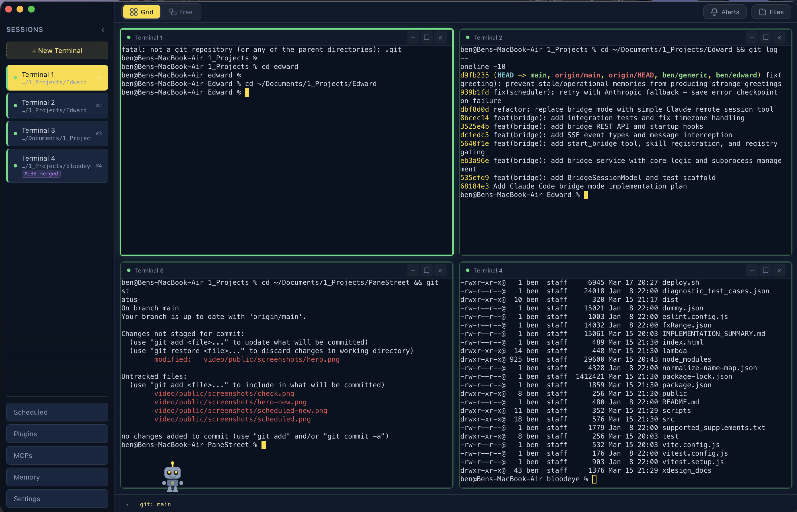
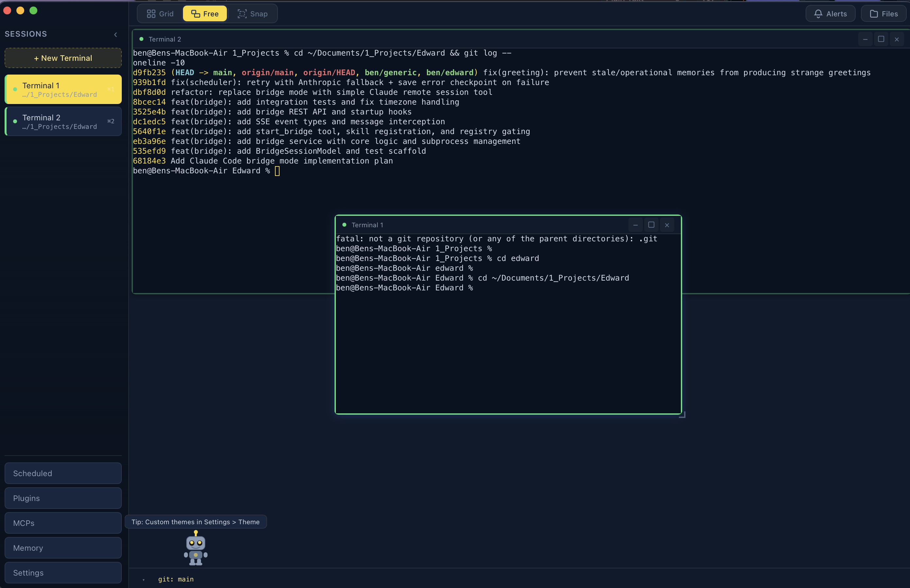
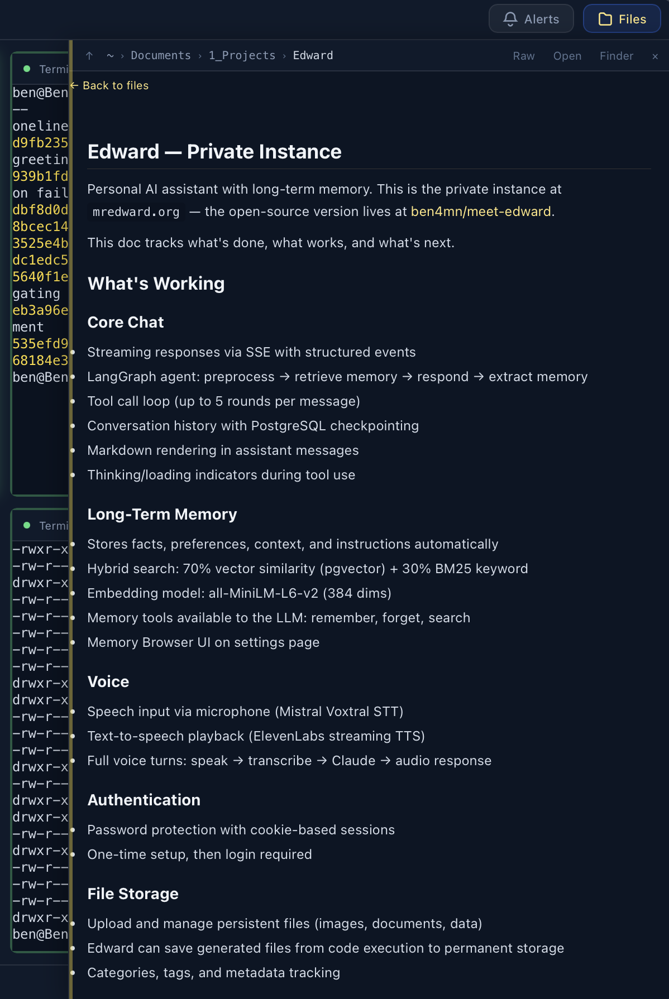
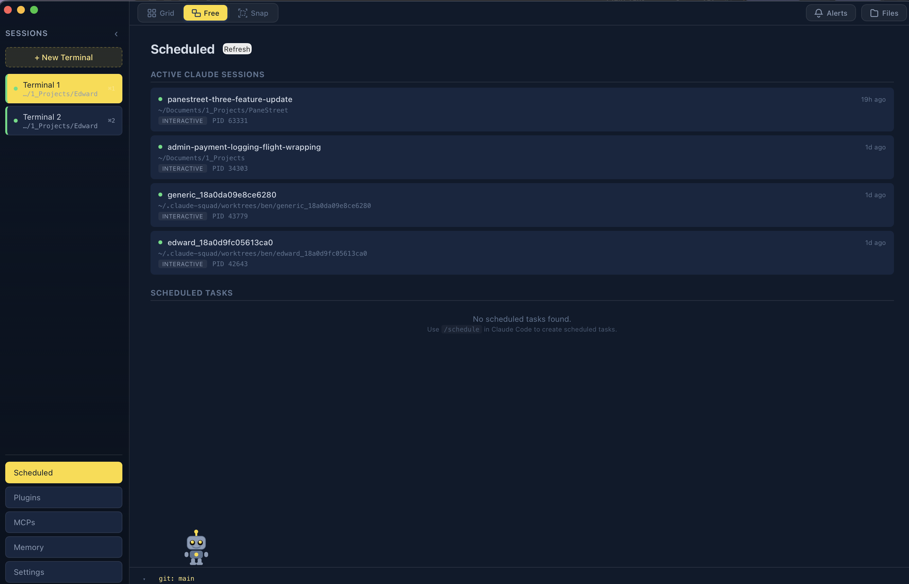
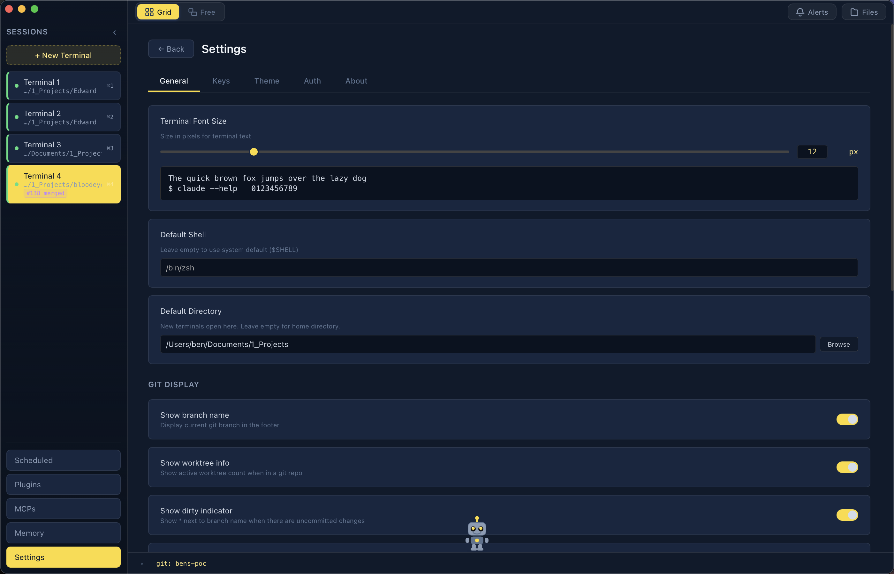
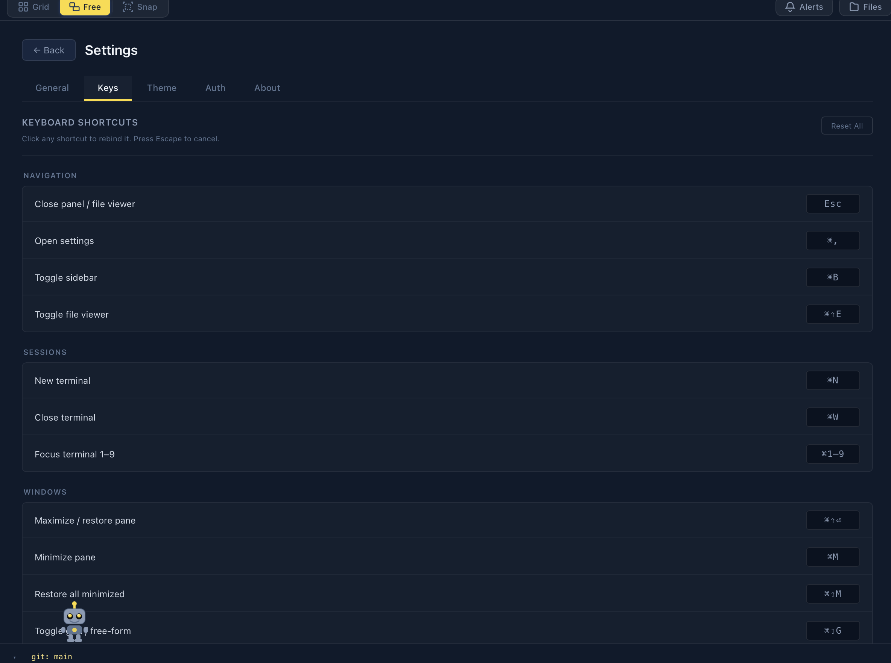

Windows 10+
PaneStreet for Windows
A modern, GPU-accelerated terminal multiplexer with multi-pane layouts, 16 themes, and Claude AI integration. Native Windows app built with Tauri and Rust.

A modern, GPU-accelerated terminal multiplexer with multi-pane layouts, 16 themes, and Claude AI integration. Native Windows app built with Tauri and Rust.

A batteries-included terminal multiplexer that doesn't make you read a manual first.
Auto-grid, freeform drag-and-drop, or edge-snap tiling. Manage up to 9 terminals in a single window with one-key switching.
Powered by xterm.js with WebGL rendering. Smooth scrolling and fast output even with heavy log streams.
Browse files without leaving the app. The file viewer tracks your terminal's working directory automatically.
Dracula, Nord, Tokyo Night, Catppuccin, Synthwave 84, and more. Plus a full color editor for custom themes.
Notification sidebar, pulsing glow rings on unfocused panes, and a robot mascot that relays alerts. Native Windows desktop notifications with OSC 9/99/777 support.
View installed plugins, MCP servers, and project memory. Shift+Enter support for Claude Code. Smart status detection for Claude prompts.
An animated companion that reacts to your terminal activity, gets bored when you're away, relays notifications, and has easter eggs. Drag it around. Hold it. Click it.
Auto-detects PowerShell 7 or Windows PowerShell. Every shortcut is rebindable. Ctrl+Alt Arrows for directional pane navigation.
Switch themes instantly. Or build your own with the color editor.

A few looks at what you're getting.




Download the installer or build from source.
Grab the latest release for Windows 10+.
Download .msi InstallerRequires Node.js 18+, Rust, and Visual Studio Build Tools (C++ workload).
git clone https://github.com/ben4mn/PaneStreetWindows.git
cd PaneStreetWindows
npm install
npm run tauri build
src-tauri/target/release/bundle/
All shortcuts are rebindable in Settings.
| Action | Shortcut |
|---|---|
| New Terminal | Ctrl N |
| Close Terminal | Ctrl W |
| Reopen Closed | Ctrl Shift Z |
| Settings | Ctrl , |
| Toggle Sidebar | Ctrl B |
| File Browser | Ctrl Shift E |
| Maximize Pane | Ctrl Shift Enter |
| Toggle Layout Mode | Ctrl Shift G |
| Navigate Panes | Ctrl Alt Arrow |
| Notifications | Ctrl I |
| Switch to Pane 1-9 | Ctrl 1 – Ctrl 9 |
Built for Windows from the ground up, not a port with rough edges.
Automatically prefers PowerShell 7 (pwsh) over Windows PowerShell 5 over cmd.exe. Override with the PS_SHELL environment variable.
Native ConPTY-aware implementation for newline insertion. Works seamlessly with Claude Code and other modern CLI tools.
Background commands (git, netstat, gh) run with hidden windows so nothing flashes in the taskbar.
Throttled native desktop notifications (5s cooldown) to prevent Windows taskbar flash spam. Focus-debounced to handle toast notification refocus.